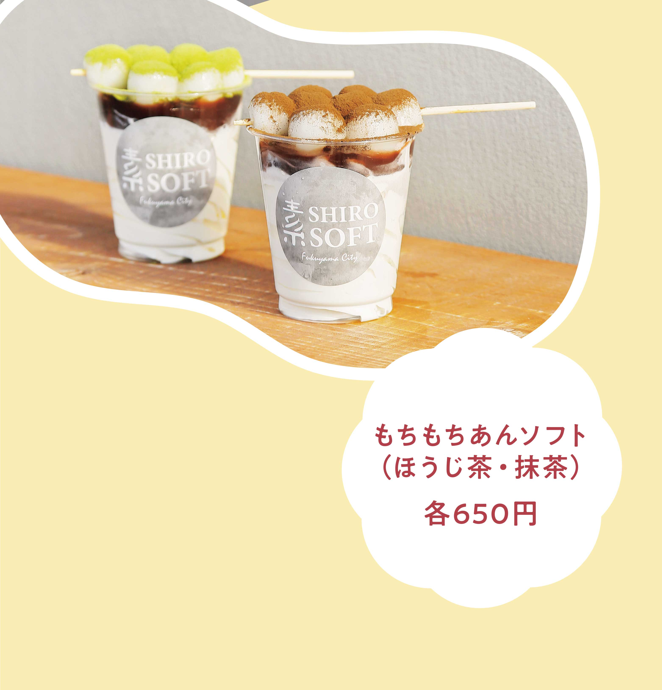
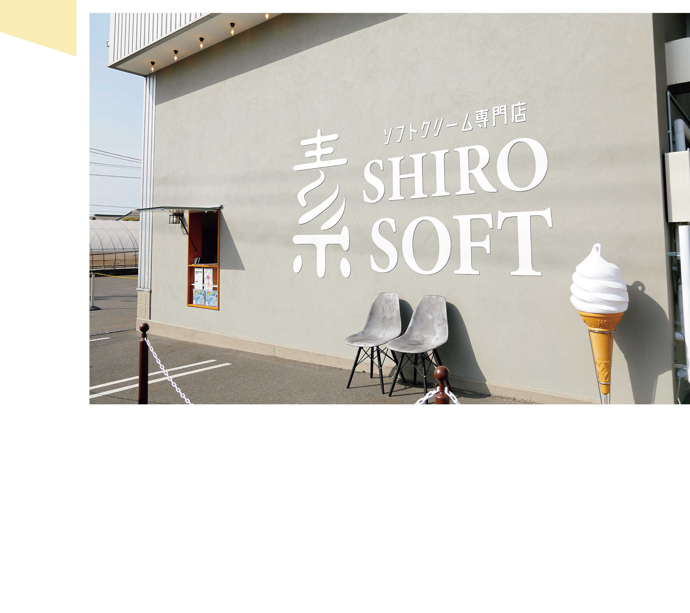
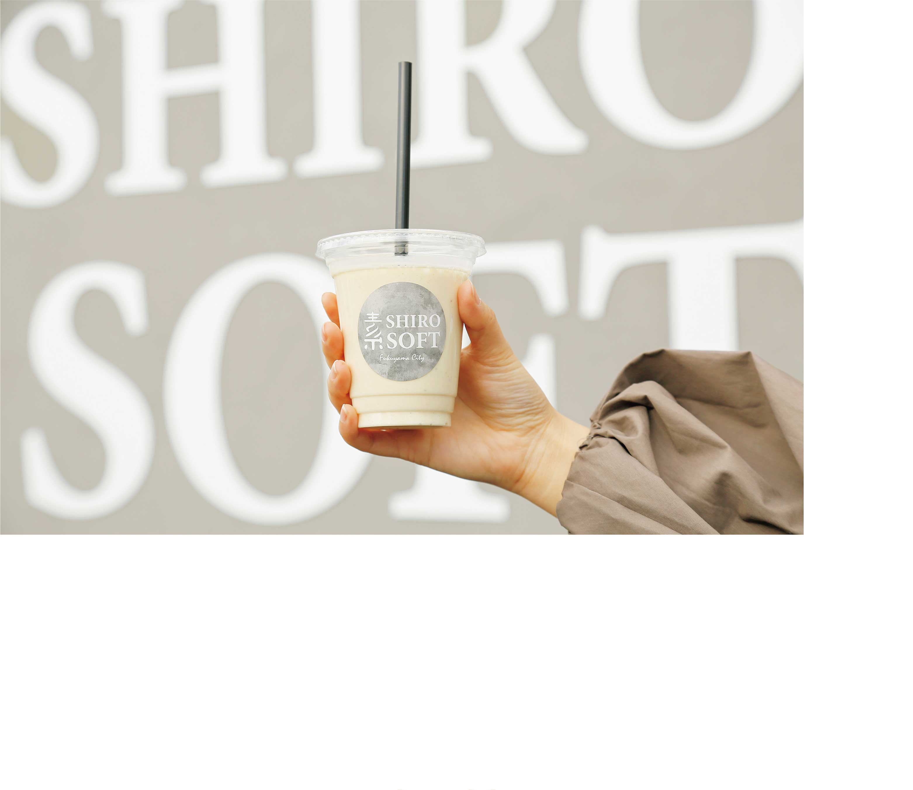
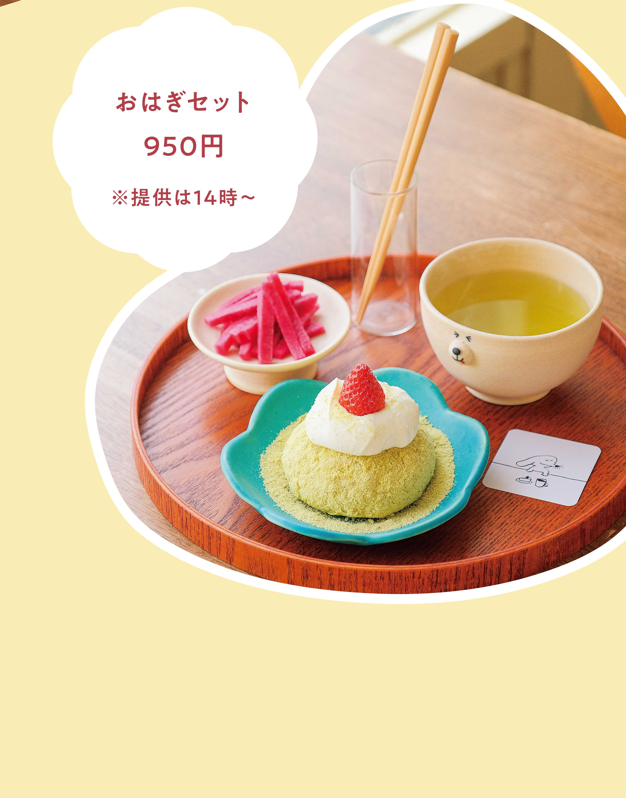
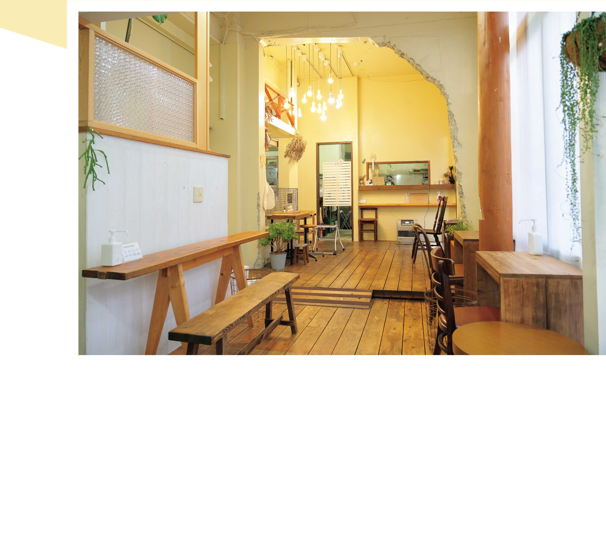
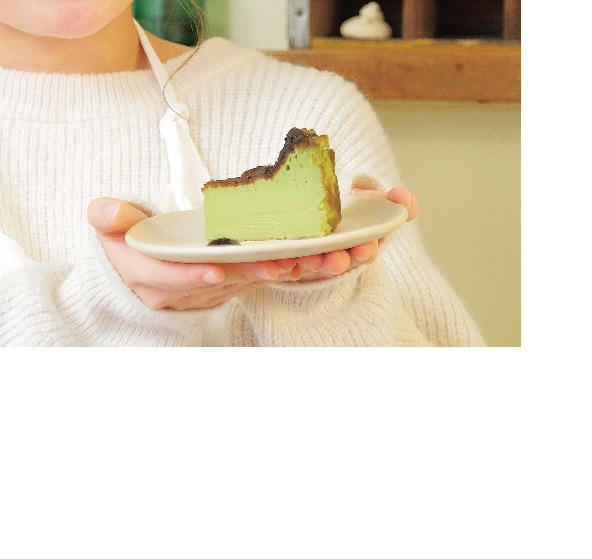

SHOP1
平日でもひっきりなしに人が訪れ、週末になれば長蛇の列ができるほどの人気ソフトクリーム専門店で、心奪われるビジュアルのあんこスイーツを発見！香川県高松市『しおのえふじかわ牧場』の牛乳を使用したソフトクリームに、なめらかな舌触りにこだわって仕入れたこしあんをトッピングした「もちもちあんソフト」。牛乳本来の風味を生かしながらも後口サッパリのソフトクリームが、甘めに炊かれたこしあんをさらに引き立てている。
-
 上にずらりと並んだ８個の白玉だんごには、京都府宇治市で150年以上の歴史を持つ『北川半兵衛商店』の香り高い抹茶とほうじ茶のパウダーを使用。
-
 壁面にはオシャレな撮影スポットも用意されているので、購入した商品を手に、写真撮影を楽しもう。3月頃には、いちごを使ったメニューも再登場予定。
-
 ソフトクリームとバナナをミックスしたバナナジュース550円もスタンバイ。
SHOP1
北海道産小豆を１時間以上かけて炊きあげた甘さ控えめのあんこと、独自配合のコク深い生クリームとの相性は抜群。生地には店で精米された広島産もち米を使用。時間が経っても箸を入れるとすっと切れるほど柔らかい。おはぎとの食べ合わせを考慮して作られた紅芯大根の漬け物で箸休めしながら、おいしく召し上がれ。
-
 コロンとしたフォルムが特徴的なおはぎに生クリーム、青きな粉、季節のフルーツがトッピングされている。
-
 白で統一されたナチュラルな雰囲気の店内には、手作りのオブジェが飾られるなどインテリアのセンスが光る。全32席。
-
 おはぎと並んで人気を集めるのは、クリーミーでなめらかな食感のバスクチーズケーキ。写真は抹茶バスクチーズケーキ600円。